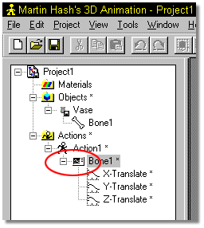
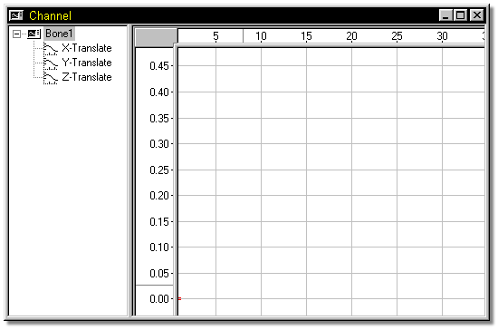
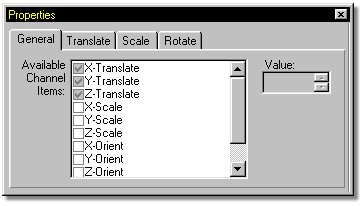

The acceleration and deceleration associated with motion is known as ease.
Channels, because of their spline nature, provide excellent and controllable ease
for very realistic, natural movement. Every motion has a channel associated
with it. As you add new keyframes, new control points will be automatically
created inside the appropriate channel.
The acceleration and deceleration associated with motion is known as ease.
Channels, because of their spline nature, provide excellent and controllable ease
for very realistic, natural movement. Every motion has a channel associated
with it. As you add new keyframes, new control points will be automatically
created inside the appropriate channel.
When a channel is opened for the first time, the location and size is chosen by the software and any available data is zoomed to fit in the window. The channel window can be manipulated with the Zoom, Move, and Scale tools. If you change the position, size, zoom, or offset of the graph, then re-open the channel, your changes will be remembered.
Everytime a channel is available for editing, an icon similar to the one shown here will be visible to the left of the channel name.

To edit any given channel, right click the channel name, and select Edit from the pop up menu that appears. The channel window looks similar to the following image.

The available channels for any given item are displayed on the Properties Panel when the item is selected in the Project Workspace.

Tell Me About:
Channel Attributes
Adding Channels
Removing Channels
Channel Add Control Points
Channel Frame
Channel Value
Channel Gamma
Channel Magnitude
Channel Rulers
Channel Bound Group
Other Group Commands
Channel Interpolation Methods